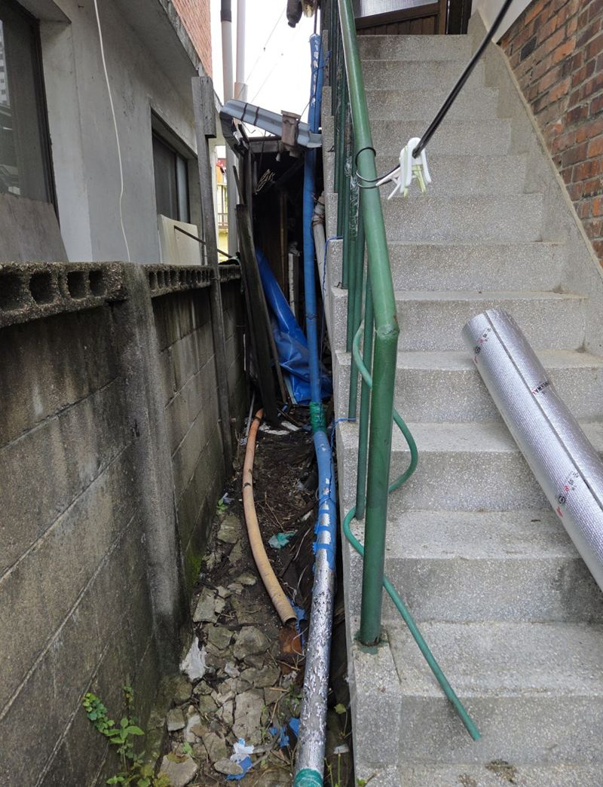
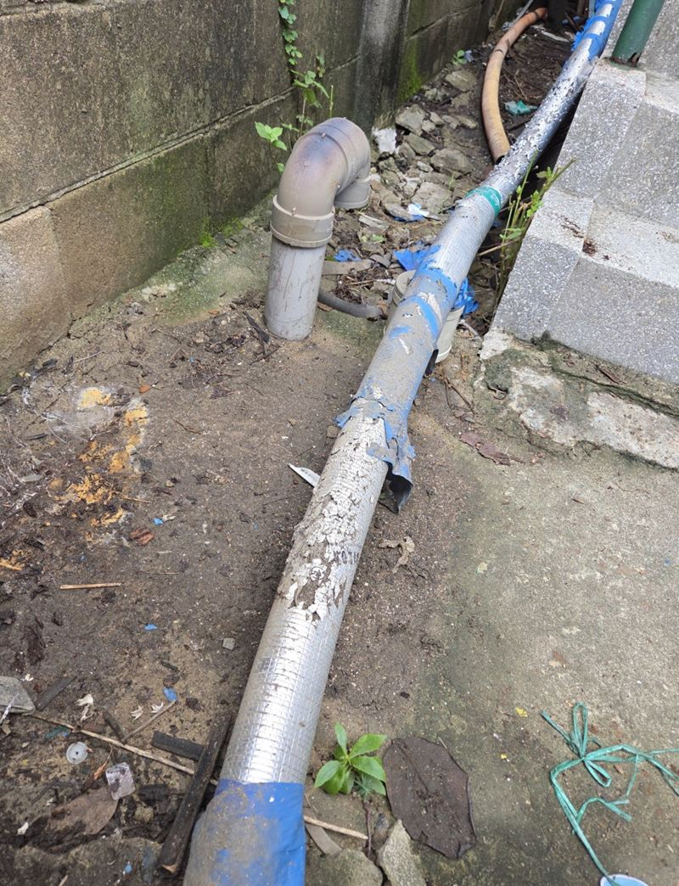
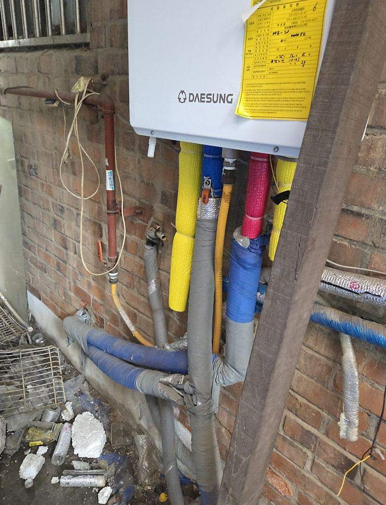
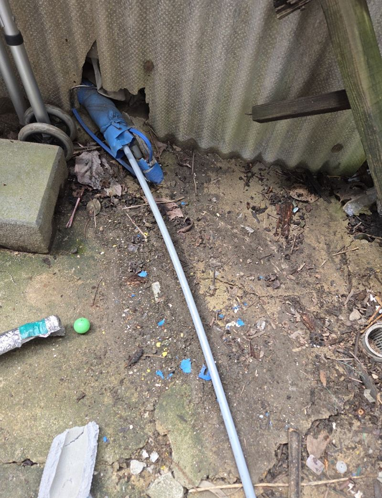
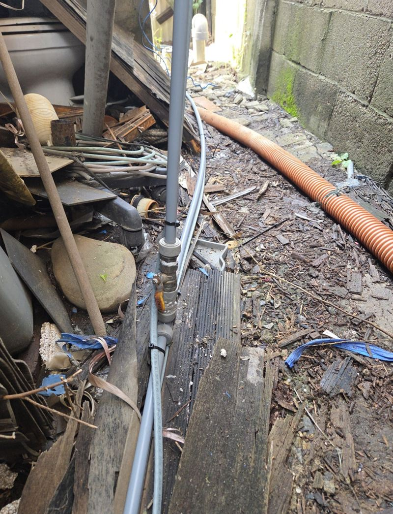
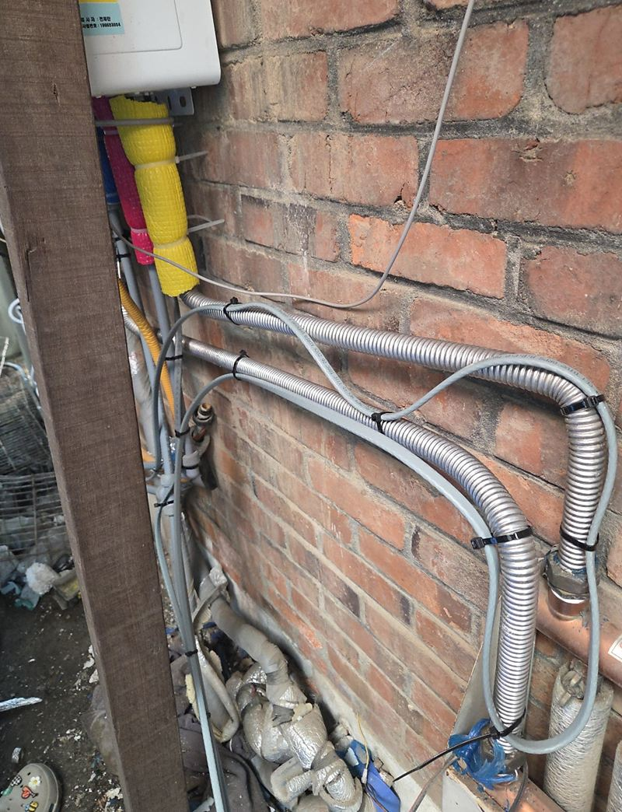
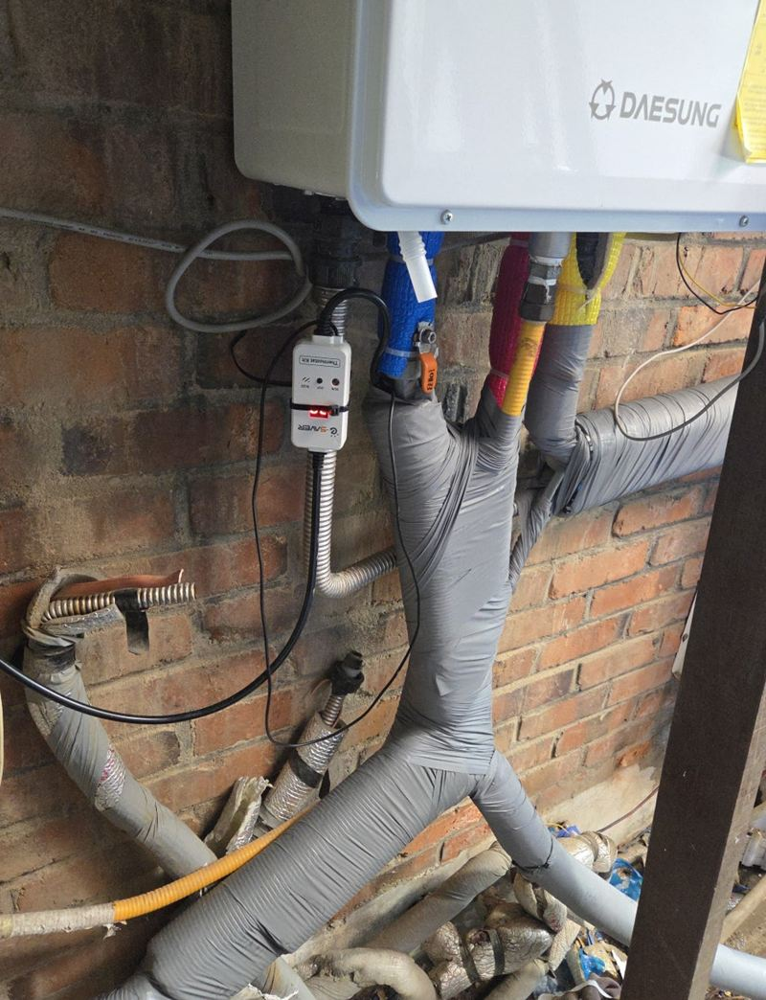

파주 한파 대비 수도관 열선 보온 작업 방법

 작업 전작업 후
작업 전작업 후← 밀어서 전후 비교 →
"해마다 한파만 오면 수도가 얼어 물을 못 썼어요. 이번엔 날 추워지기 전에 미리 막아 두려고요." 단독주택 바깥으로 지나가는 수도관이 해마다 얼던 집이에요. 낡은 보온재를 다 걷어 내고 열선을 배관에 밀착시켜 감은 뒤, 새 보온재와 테이핑으로 덮었어요.
| 현장 | 파주 금정동 단독주택 외부 노출 수도관 |
|---|---|
| 길이 | 약 20m |
| 한 일 | 기존 보온재 철거 → 배관 정리 → 발열선 밀착 → 센서·조절기 위치 → 새 보온재 → 테이핑 |
| 시기 | 첫 한파 전 가을에 미리 |
얼고 나서보다 얼기 전에
한 번 얼었던 구간은 다음 겨울에도 또 얼기 쉬워요. 기온이 떨어진 뒤에는 작업 요청이 몰리고, 이미 언 배관은 녹이는 일부터 해야 해요. 그래서 노출된 길이, 기존 보온 상태, 전원 위치, 물이 닿는 구간을 가을에 미리 확인해 두는 게 좋아요.
| 확인할 것 | 이유 |
|---|---|
| 노출된 길이 | 열선·보온재 양과 작업 범위 |
| 기존 보온 상태 | 덧감을지, 걷고 새로 할지 |
| 전원 위치 | 열선 연결 가능 여부 |
| 물 닿는 구간 | 센서·조절기 둘 자리 |
열선 보온 작업 순서
낡은 보온재 걷기
오래 눌려 있던 보온재는 무리하게 당기면 배관 연결부가 상할 수 있어요. 감긴 방향대로 천천히 풀어내며 배관 상태를 확인했어요.


열선을 배관에 밀착
발열선이 배관에서 뜨면 열이 제대로 전해지지 않아요. 배관 표면을 정리하고 열선을 붙여 감아 고정했어요.


새 보온재와 테이핑
열선 위로 새 보온재를 덮고, 아래에서 위로 겹쳐 가며 테이프를 감아 빗물이 스며들지 않게 마감했어요.


작업 후 확인한 것
- 전원과 조절기열선에 전기가 들어오는지, 조절기 표시가 정상인지 확인했어요.
- 센서 위치온도 센서가 가장 먼저 얼던 구간 가까이에 있도록 맞췄어요.
- 테이프 들뜸끝부분이 들뜨면 그 틈으로 물이 들어가서 꼼꼼히 눌러 붙였어요.
이런 배관이면 열선을 권해요
- 작년 겨울에 한 번 얼었어요한 번 언 구간은 다음 겨울에도 얼기 쉬워요. 그 구간부터 열선을 감아요.
- 북쪽 그늘진 벽을 따라 지나가요해가 들지 않는 쪽 배관은 낮에도 잘 녹지 않아서 더 쉽게 얼어요.
- 보온재가 부스러지고 테이프가 벗겨졌어요속으로 비가 들어가 오히려 차갑게 만들어요. 걷어 내고 새로 감는 게 좋아요.
- 세탁기나 마당 수도가 밖에 있어요자주 쓰지 않는 수전일수록 물이 고여 얼기 쉬워요.
수도관 열선 질문
보온재만 새로 감으면 안 되나요?
영하가 길게 이어지는 곳은 보온재만으로 버티기 어려워요. 자주 얼던 구간은 열선을 함께 권해요.
열선 전기요금이 많이 나오나요?
조절기가 있으면 추울 때만 작동해서 부담을 줄일 수 있어요. 길이와 제품에 따라 달라요.
세탁기 수전도 같이 할 수 있나요?
베란다나 외부 세탁기 수전도 같은 방식으로 감싸요. 위치를 알려주세요.
이미 얼어 버렸는데 지금 해도 되나요?
먼저 언 배관을 녹이고 터진 곳이 없는지 확인한 뒤 작업해요. 터졌다면 배관 수리가 먼저예요.
아파트 공용 배관도 하나요?
관리사무소 의뢰로 단지 단위 작업도 해요. 구간 길이를 알려주세요.
열선은 몇 년 쓰나요?
사용 환경과 제품에 따라 달라요. 겉 보온재와 테이프가 찢어지지 않게 관리하면 더 오래 써요.
보일러 배관도 같이 감을 수 있나요?
바깥에 드러난 보일러 급수 배관도 같은 방식으로 보온해요. 보일러 본체 고장은 보일러 업체에 맡겨 주세요.
콘센트가 멀리 있으면 어떻게 하나요?
가까운 실외 콘센트를 쓰거나 전원 연결 방법을 함께 정해요. 물이 닿지 않는 위치로 잡아요.
겨울 동안 따로 할 일이 있나요?
조절기 전원이 켜져 있는지 한파 예보 전에 한 번 확인해 주시면 돼요.
다른 실외기·배관 보온 현장
얼었던 배관 전체와 가까운 콘센트 위치를 찍어 보내 주세요.
전화 상담 010-4517-9872